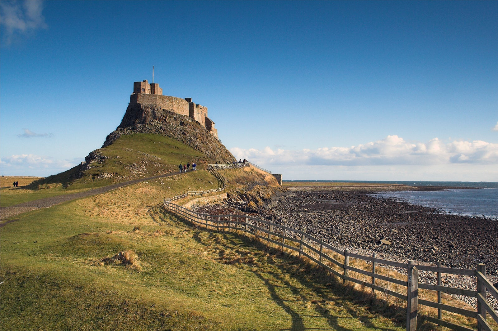
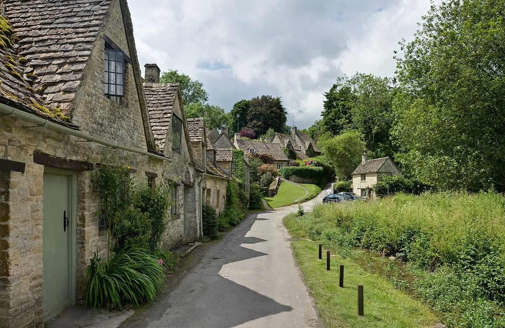
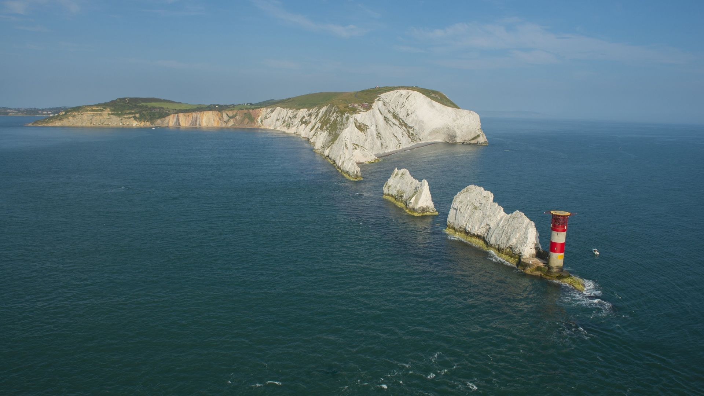

Luchtballon door Engeland
Tijdens deze reis ga je gezellig met een luchtballon door engeland heen. Je komt tijdens de reis in hele mooie natuurparken waar je allemaal wilde dieren tegenkomt en waar niemand je kan storen. Op sommige dagen kan je ook lekker uitrusten bij het strand en dingen voor je zelf doen.
Dag 1 & 2
 Op deze dag ga je beginnen met genieten van de vrijheid genieten door je eerste stap in de luchtballon te zetten. Je stapt op in Northumberland en van daar vlieg je naar Yorkshire waar je de volgende dag rond kan lopen in de mooie natuurparkenDag 3 & 4
 Vandaag maak je en korte vlucht naar het Peak District National Park waar je de hele middag in het park rond brengt.
's Avonds ga je terug in de luchtballon om 's nachts naar Norfolk te vliegen. Wanneer je wakker wordt vlieg je net boven Norfolk
waar je de rest van de dag heen en weer vliegt tussen de mooie natuurparken en dorpen. Vannacht vlieg je richting Cotswolds.
Vandaag maak je en korte vlucht naar het Peak District National Park waar je de hele middag in het park rond brengt.
's Avonds ga je terug in de luchtballon om 's nachts naar Norfolk te vliegen. Wanneer je wakker wordt vlieg je net boven Norfolk
waar je de rest van de dag heen en weer vliegt tussen de mooie natuurparken en dorpen. Vannacht vlieg je richting Cotswolds.
Dag 5 & 6
 Vandaag wordt je wakker boven Cotswolds, een heel mooi natuurpark vol met vogels. Als je bent geland ga je die dag langs leuke vogelparken. Voor dat de zon onder gaat vlieg je naar London waar je een mooie skyline kan zien net voordat de zon helemaal onder gaat.Dag 7 & 8
 Op deze dag je gezellig naar Isle of Wight om daar lekker te genieten van de weiden en van het strand. Na het rustige dagje genieten ga je lekker naar Wiltshire waar je de Stone Henge kan bezoeken en de hele mooie en historische stad.Dag 9 & 10
 Deze laatste dagen ga je eerst een dag naar Cornwall waar je lekker rustig aan kan doen en uitrusten van de vorige dagen.
Op de laatste dag zit je de hele dag in de luchtballon om terug te vliegen naar je vertekplaats.
Deze laatste dagen ga je eerst een dag naar Cornwall waar je lekker rustig aan kan doen en uitrusten van de vorige dagen.
Op de laatste dag zit je de hele dag in de luchtballon om terug te vliegen naar je vertekplaats.
.